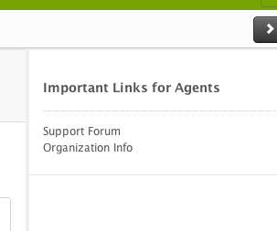

Welcome.
There are a number of hand-crafted apps that have already been created to serve our customers. This documentation is intended to reveal some of the options available for those who wish to customize their Zendesk account, and the plug-ins described herein are to be understood to be of an 'experimental' nature. They are unofficial and to be used at your own risk.
Our Top Five Agent Extensions
These are some of the most-requested, frequently asked-about, and pridefully dashing add-ons created and vetted by our own services team engineers.
-
New! Mobile Customization
Two widgets are used to optimize the desktop version of the site for mobile, allowing the use of custom JavaScript and CSS while maintaining usability of your Zendesk on mobile devices
Read More -
Html App
This is just an app to display HTML links in the ticket sidebar. Just edit the links.hdbs with the links you want to show
Read More -
Conditional Fields
This app requires configuration, but it enables the ticket form to show and hide certain fields based on user selection or other criteria
Read More -
Create Ticket in Spoke

Allows an agent to create a ticket in a spoke account from inside the hub account ticket view
Read More -
Quick Links App
Creates links based on ticket fields data that open in a new tab
Read More
First, the default Zendesk mobile must be disabled from within the agent's settings. Go to Settings >> Channels >> Web Portal, and uncheck "Mobile Version." Then, create two widgets, a JavaScript widget (global) and a CSS widget. Populate the JS widget and the CSS widget with the code found here.
The code provided, in particular the CSS, may require modifications by you or your developer in order to meet your needs. With these widgets in place, you will be able to use conditional fields, show and hide certain elements, and any other customizations that are possible with your desktop version.
This app is for Lotus only. You can download the source from right here and open it up to configure what's inside. You'll want to open links.hdbs, inside of the templates folder, and look for the html anchor elements, which you can replace with whatever you want your links to be.
This hdbs template can contain dynamic content to enhance customizability. To get similar functionality in the classic interface, you can go to Settings >> Extensions and create a Custom Widget, inside of which you can include your own links or other html.
One of our very top requested apps for functionality, Conditional fields is available for both Lotus and end-user (classic). For Lotus, download the app from here, and for Classic, see examples in this post. The main idea is, you need to build an array of all the fields that should be hidden,
then build a 'map', like a hash, associating each user selection in the watched field with the conditional fields that it should cause to show. Then observe the watched field for changes, and upon a change, show the correct hidden field according to the map.
Many Zendesk customers use a Hub-And-Spoke model for keeping track of tickets. With this app, you can view a ticket in Lotus for the hub account, and in the sidebar, create a corresponding ticket in the spoke account. See this page to get the source code for this app.
To get started, go to the agent interface, in Settings under "Apps," click "Create" and upload the source as a .zip file. This app has settings which can be filled out in the Lotus interface; this is where you will input the information for the different spoke accounts for which you will be creating tickets.
This app uses data from the ticket to create links that search various websites or trace an IP address. When buttons are clicked a new tab will open in the browser with the parameters from the ticket in the url. Get the source here and open it up to configure it.
You can make changes in app.js to tell it which fields to grab info from, and then in templates/links.hdbs to tell it what do to with these pieces of information; for instance, how to contruct the links that you would like to show.
Generic Add-Ons
These are extensions that can be plugged right in to any account with little to no configuration to get up and running
-
Updated-At Display - Classic
Shows the date that an article was updated at in forums rather than just the date that it was created
-
Html App - Lotus
This is just an app to display HTML links in the ticket sidebar. Just edit the links.hdbs with the links you want to show
-
Response Time - Classic
With this you can track how much time a ticket spends in different states (new, open, pending, solved) and record response time. Requires small amount of configuration.